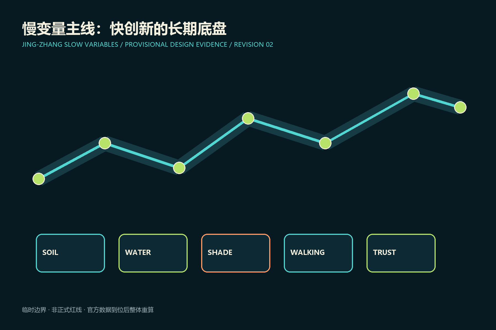
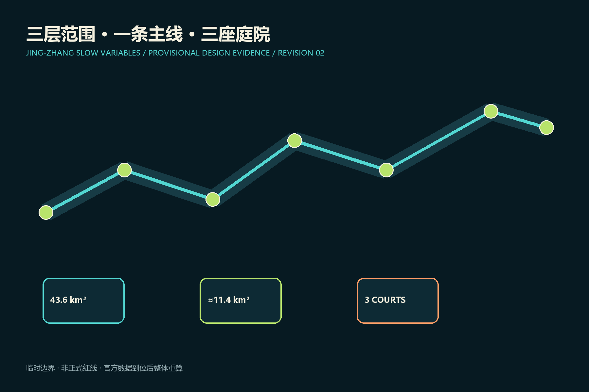
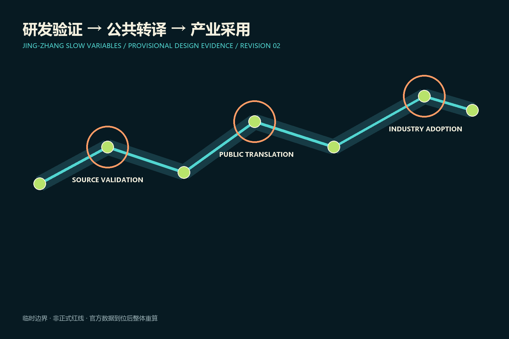
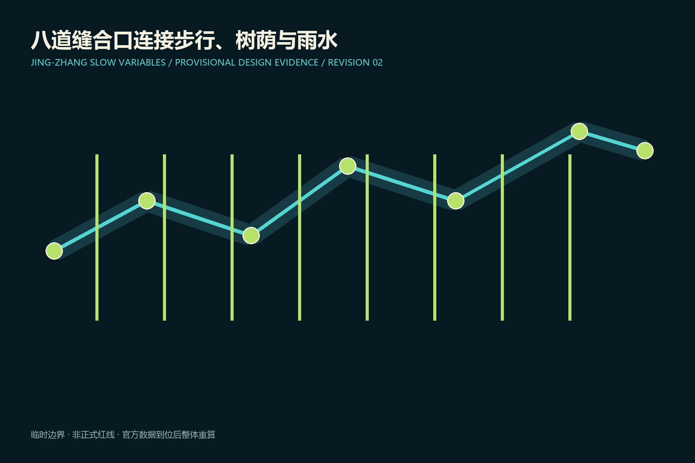
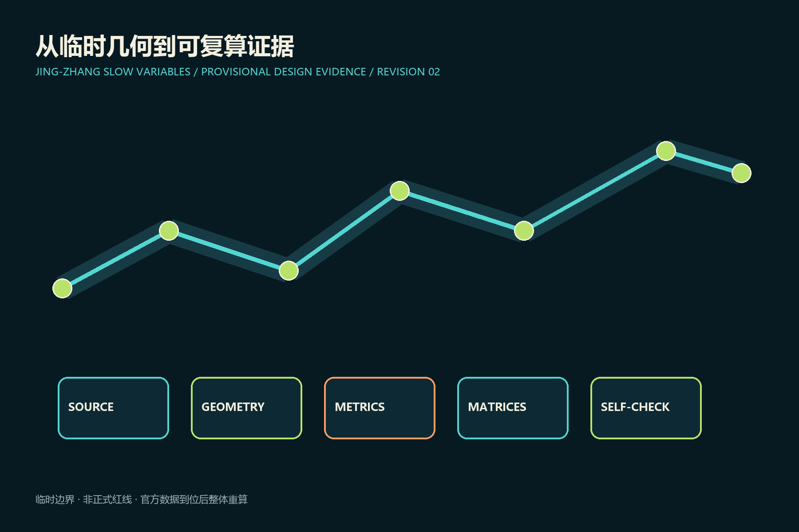

京张慢变量 / JING-ZHANG SLOW VARIABLES
以土壤、树荫、雨水、步行与可撤回试验为AI创新带的长期底盘。
京张慢变量 / JING-ZHANG SLOW VARIABLES
设计依据与资料清单
方案依据公开公告、智能体任务书、场地包和来源登记表。当前场地与三处重点区均为维护者提供的临时粗略几何，只用于概念生成、复算和讨论，不是正式红线；官方多边形到位后必须整体重算。 来源 来源 空间数据
本节的空间判断将通过提交包中的几何、指标与矩阵交叉复核。设计动作优先采用可逆、可维护和可由人工接管的方式，并把公共利益、无障碍与遗产连续性作为取舍条件。由于正式边界、控规条件、产权、交通、市政容量和现状实测尚未完整公开，本节涉及强度、面积、工程和实施时序的内容均为概念建议；专业团队取得正式资料后，应核对源文件、重算相关指标、复核图面并记录变更，不得把临时结果直接用于审批或建设。

三层范围工作框架
43.6平方公里统筹研究层负责创新生态，约11.4平方公里总体设计层组织遗址公园两侧更新，三处临时重点区承接详细验证。“慢变量账本”为每个项目登记公共收益、责任人、复核日和退出条件。 标准 深度 指标
本节的空间判断将通过提交包中的几何、指标与矩阵交叉复核。设计动作优先采用可逆、可维护和可由人工接管的方式，并把公共利益、无障碍与遗产连续性作为取舍条件。由于正式边界、控规条件、产权、交通、市政容量和现状实测尚未完整公开，本节涉及强度、面积、工程和实施时序的内容均为概念建议；专业团队取得正式资料后，应核对源文件、重算相关指标、复核图面并记录变更，不得把临时结果直接用于审批或建设。

统筹研究范围产业与未来城市研究
品牌“京张慢变量”以双轨与五个年轮点代表土壤、雨水、树荫、步行和信任。三项定位是可验证AI城市客厅、研发到采用的开源试验带、以长期公共价值校准技术速度的百年新线；五项功能是研发、验证、转译、采用和全球社区。七类生态案例覆盖自主模型、具身智能、医疗辅助、教育沙盒、低碳算力、遗产解释和中小企业服务，均为概念参考而非招商承诺。 来源 标准 深度
本节的空间判断将通过提交包中的几何、指标与矩阵交叉复核。设计动作优先采用可逆、可维护和可由人工接管的方式，并把公共利益、无障碍与遗产连续性作为取舍条件。由于正式边界、控规条件、产权、交通、市政容量和现状实测尚未完整公开，本节涉及强度、面积、工程和实施时序的内容均为概念建议；专业团队取得正式资料后，应核对源文件、重算相关指标、复核图面并记录变更，不得把临时结果直接用于审批或建设。
总体设计范围城市更新与控规深度城市设计
总体结构为“一条慢变量主线、三座验证庭院、八道东西缝合口、两翼协作网”。用地术语沿用登记的国家分类；建筑采取保留优先、适应性改造、小体量补缺、条件触发新建。高度、容积率、退线和拆除结论因缺少正式条件保持待确认。 标准 空间数据 深度
本节的空间判断将通过提交包中的几何、指标与矩阵交叉复核。设计动作优先采用可逆、可维护和可由人工接管的方式，并把公共利益、无障碍与遗产连续性作为取舍条件。由于正式边界、控规条件、产权、交通、市政容量和现状实测尚未完整公开，本节涉及强度、面积、工程和实施时序的内容均为概念建议；专业团队取得正式资料后，应核对源文件、重算相关指标、复核图面并记录变更，不得把临时结果直接用于审批或建设。
重点区域详细设计
众智园是“源头验证庭院”，设置遮荫研发街、开放基准大厅与低速测试环；AI原点社区是“公共转译庭院”，缝合校区、园区和社区并配置市民复核台；大钟寺是“产业采用庭院”，以站城步行环、可变首层和企业验证厅承接采用。 空间数据 空间数据 空间数据
本节的空间判断将通过提交包中的几何、指标与矩阵交叉复核。设计动作优先采用可逆、可维护和可由人工接管的方式，并把公共利益、无障碍与遗产连续性作为取舍条件。由于正式边界、控规条件、产权、交通、市政容量和现状实测尚未完整公开，本节涉及强度、面积、工程和实施时序的内容均为概念建议；专业团队取得正式资料后，应核对源文件、重算相关指标、复核图面并记录变更，不得把临时结果直接用于审批或建设。

AI 创新生态、人才画像与 AI+ 场景
五类人物为研究创业者、居民与老人、儿童与照护者、中小企业用户、无障碍访客。12个场景是树荫导航、雨洪预警、无障碍伴行、人工服务台、低速机器人、偏差公开课、开源发布、家庭托育、中小企业试用、遗产导览、夜间安全、全球开发者季。三个行业验证场分别检验具身智能安全停机、公共服务人工兜底、企业智能体可撤销授权。 标准 标准 深度
本节的空间判断将通过提交包中的几何、指标与矩阵交叉复核。设计动作优先采用可逆、可维护和可由人工接管的方式，并把公共利益、无障碍与遗产连续性作为取舍条件。由于正式边界、控规条件、产权、交通、市政容量和现状实测尚未完整公开，本节涉及强度、面积、工程和实施时序的内容均为概念建议；专业团队取得正式资料后，应核对源文件、重算相关指标、复核图面并记录变更，不得把临时结果直接用于审批或建设。
用地、建筑规模与拆改留方案
保留成熟社区和可再利用产业建筑；改造优先导入公共首层、共享实验室与生活服务；拆除和新建须经产权、结构、历史价值与正式控规核验，本方案不作地块级拆迁判断。 空间数据 深度
本节的空间判断将通过提交包中的几何、指标与矩阵交叉复核。设计动作优先采用可逆、可维护和可由人工接管的方式，并把公共利益、无障碍与遗产连续性作为取舍条件。由于正式边界、控规条件、产权、交通、市政容量和现状实测尚未完整公开，本节涉及强度、面积、工程和实施时序的内容均为概念建议；专业团队取得正式资料后，应核对源文件、重算相关指标、复核图面并记录变更，不得把临时结果直接用于审批或建设。
交通、轨道、市政与公共服务设施
遗址公园慢行主线、八处概念缝合口、三处站城步行环和低速测试支线组成交通网络。市政建议包括雨水花园、可维护监测与低碳边缘算力，容量、管位和工程可行性待专项核验。 空间数据 深度 深度
本节的空间判断将通过提交包中的几何、指标与矩阵交叉复核。设计动作优先采用可逆、可维护和可由人工接管的方式，并把公共利益、无障碍与遗产连续性作为取舍条件。由于正式边界、控规条件、产权、交通、市政容量和现状实测尚未完整公开，本节涉及强度、面积、工程和实施时序的内容均为概念建议；专业团队取得正式资料后，应核对源文件、重算相关指标、复核图面并记录变更，不得把临时结果直接用于审批或建设。
蓝绿空间、公共空间与城市风貌
新增AI试点不得降低连续树荫、海绵滞蓄和无障碍通行能力。公共空间采用铁路构件比例、耐久材料和可替换数字设施，传感器不得遮挡遗产视廊或制造强制交互。 空间数据 空间数据 指标
本节的空间判断将通过提交包中的几何、指标与矩阵交叉复核。设计动作优先采用可逆、可维护和可由人工接管的方式，并把公共利益、无障碍与遗产连续性作为取舍条件。由于正式边界、控规条件、产权、交通、市政容量和现状实测尚未完整公开，本节涉及强度、面积、工程和实施时序的内容均为概念建议；专业团队取得正式资料后，应核对源文件、重算相关指标、复核图面并记录变更，不得把临时结果直接用于审批或建设。

更新项目清单、实施政策与分期计划
六个概念项目为主线示范段、三座验证庭院、八道缝合口安全改善和公开账本。近期做可逆标线、遮荫与开放测试；中期做站城接口和适应性改造；远期待官方边界与控规后决定强度。每个试点12个月复核，不达公共收益或风险过高即缩减退出。 空间数据 深度 深度
本节的空间判断将通过提交包中的几何、指标与矩阵交叉复核。设计动作优先采用可逆、可维护和可由人工接管的方式，并把公共利益、无障碍与遗产连续性作为取舍条件。由于正式边界、控规条件、产权、交通、市政容量和现状实测尚未完整公开，本节涉及强度、面积、工程和实施时序的内容均为概念建议；专业团队取得正式资料后，应核对源文件、重算相关指标、复核图面并记录变更，不得把临时结果直接用于审批或建设。
指标体系、面积复算与合规矩阵
场地面积、绿地率、公共空间率、建筑基底面积和重点区数量均从GeoJSON在EPSG:4548下复算；容积率保持待数据补齐。树荫连续性、雨水滞蓄、无障碍绕行、人工接管时间和试验退出率需后续实测建基线，不虚构数值。 指标 指标 深度
本节的空间判断将通过提交包中的几何、指标与矩阵交叉复核。设计动作优先采用可逆、可维护和可由人工接管的方式，并把公共利益、无障碍与遗产连续性作为取舍条件。由于正式边界、控规条件、产权、交通、市政容量和现状实测尚未完整公开，本节涉及强度、面积、工程和实施时序的内容均为概念建议；专业团队取得正式资料后，应核对源文件、重算相关指标、复核图面并记录变更，不得把临时结果直接用于审批或建设。

风险、版权与合规说明
主要风险是把临时几何误读为红线、把概念项目误读为政府承诺、把算法输出误读为专业结论。所有成果持续标注临时状态、人工责任与停止条件；官方资料更新后重算全包。四个文化节点为詹天佑工程精神馆、失败可见墙、开源贡献者年轮台、全球AI公共价值论坛站。 来源 深度 标准
本节的空间判断将通过提交包中的几何、指标与矩阵交叉复核。设计动作优先采用可逆、可维护和可由人工接管的方式，并把公共利益、无障碍与遗产连续性作为取舍条件。由于正式边界、控规条件、产权、交通、市政容量和现状实测尚未完整公开，本节涉及强度、面积、工程和实施时序的内容均为概念建议；专业团队取得正式资料后，应核对源文件、重算相关指标、复核图面并记录变更，不得把临时结果直接用于审批或建设。
参考资料
完整来源、许可与限制见sources.json；专业、任务和深度响应见三个矩阵文件。 来源 来源
本节的空间判断将通过提交包中的几何、指标与矩阵交叉复核。设计动作优先采用可逆、可维护和可由人工接管的方式，并把公共利益、无障碍与遗产连续性作为取舍条件。由于正式边界、控规条件、产权、交通、市政容量和现状实测尚未完整公开，本节涉及强度、面积、工程和实施时序的内容均为概念建议；专业团队取得正式资料后，应核对源文件、重算相关指标、复核图面并记录变更，不得把临时结果直接用于审批或建设。